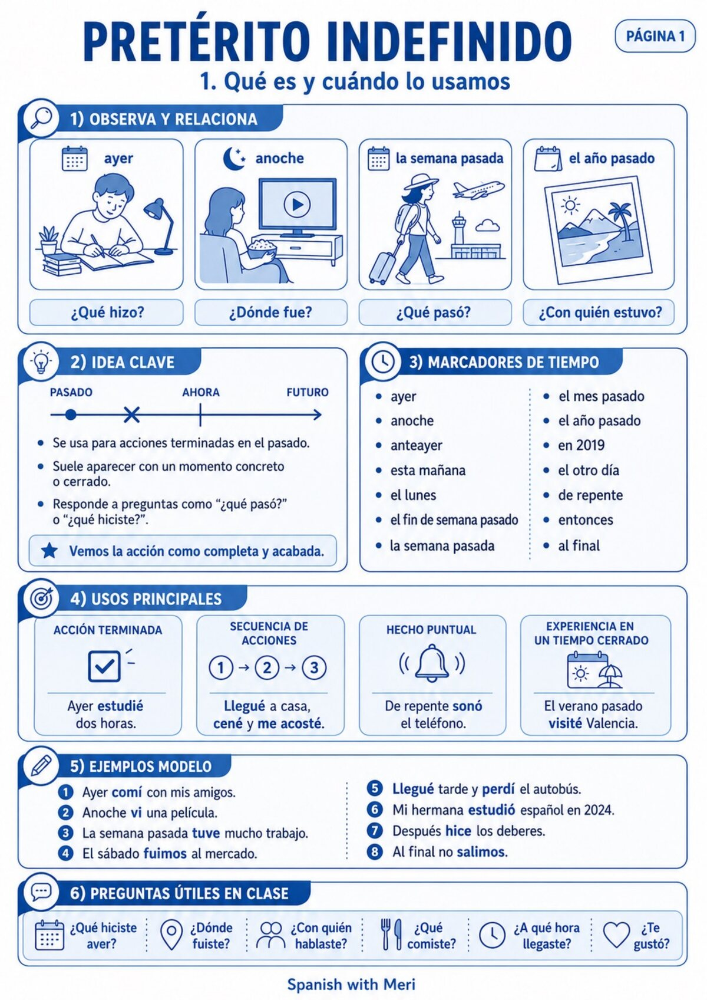

Uso y marcadores
Cuándo usamos el indefinido y qué expresiones temporales lo acompañan.
Una guía visual completa para entender, practicar y utilizar el pasado en situaciones reales. Incluye explicaciones claras, verbos regulares e irregulares, lectura, expresión oral, escritura y soluciones.

Qué encontrarás
El material avanza paso a paso para que primero entiendas la forma y después puedas usarla.
Cuándo usamos el indefinido y qué expresiones temporales lo acompañan.
Terminaciones de hablar, comer y vivir con ejemplos claros.
Formas esenciales, verbos especiales y cambios ortográficos.
Completar, transformar, ordenar, corregir y crear frases.
Lectura, entrevista, role plays e historias en pasado.
Respuestas para revisar el trabajo de forma autónoma.
Abre el PDF y trabaja el pretérito indefinido a tu ritmo.